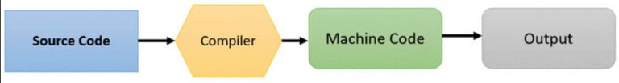
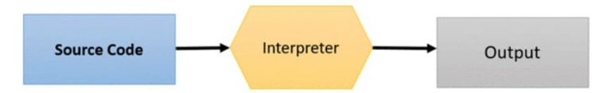
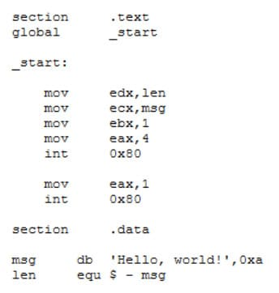

Bahasa pemrograman adalah bahasa yang digunakan oleh programmer untuk memberikan instruksi kepada komputer. Itulah kenapa bahasa pemrograman tersusun dari sintaks yang merupakan perintah komputer untuk menjalankan suatu program. Nah, perintah tersebut akan diterjemahkan menjadi logika yang dimengerti komputer. Dengan begitu, tidak heran kalau bahasa pemograman sering disebut sebagai bahasa komputer. Hasil akhir dari penggunaan bahasa pemrograman adalah sistem operasi, aplikasi desktop, website, aplikasi mobile, bahkan berbagai perangkat teknologi yang biasa Anda operasikan sehari-hari.
ungsi pertama bahasa pemrograman adalah sebagai jembatan komunikasi antara programmer dan komputer. Ini sesuai dengan fungsi bahasa itu sendiri, yakni alat komunikasi yang dipahami oleh penuturnya. Sayangnya, bahasa yang dipahami komputer berbeda dengan bahasa manusia. Maka dari itu, perintah bahasa pemrograman yang ditulis programmer harus diterjemahkan terlebih dahulu, agar bisa dimengerti komputer. Untuk menerjemahkan bahasa pemograman ke bahasa komputer, ada dua metode yang biasa digunakan, yaitu:
Metode Compiler
Compiler adalah tools untuk memindai seluruh perintah bahasa pemrograman, lalu mengubahnya menjadi sebuah paket file baru. Nah, paket file ini berisikan kode mesin yang dapat dibaca komputer atau perangkat lain

Kemudian, komputer dapat mengeksekusi perintah bahasa pemrograman setiap kali pengguna menjalankan paket file tersebut. Oh ya, ekstensi paket file ini bisa berbeda, sesuai dengan perangkat yang akan menjalankan program.
Misalnya, .EXE untuk perangkat berbasis Windows, .APK untuk Android, atau .APP untuk iOS. Sementara, bahasa pemograman yang tercatat menggunakan Compiler antara lain C, C++, C#, Java, Kotlin, dan Swift.
Metode Interpreter
Interpreter adalah tools untuk mengubah perintah bahasa program menjadi kode mesin, tanpa menghasilkan paket file baru. Caranya dengan menerjemahkan perintah tersebut sebaris demi sebaris, saat program dijalankan.

Contoh tools yang lazim dipakai sebagai Interpreter adalah web browser. Oleh sebab itu, Interpreter sering digunakan oleh bahasa pemrograman spesialis website, seperti JavaScript, Ruby, dan PHP.
Fungsi kedua bahasa pemrograman adalah sebagai tools untuk mengembangkan sistem dan program. Cara kerjanya, programmer akan menulis kode program (coding) yang kemudian diubah menjadi kode mesin.
Hasil akhir dari kode mesin tersebut adalah jutaan sistem operasi, website, games, dan aplikasi yang ada saat ini. Bahkan, perangkat berlabel ‘smart’ milik Anda juga dapat berfungsi karena adanya kode program di dalamnya.
Apa Saja Jenis-jenis Bahasa Pemrograman?
Bahasa Assembly atau bahasa rakitan adalah jenis bahasa pemrograman tingkat rendah untuk membangun sistem yang berhubungan langsung dengan perangkat keras. Contohnya untuk membuat sistem operasi atau driver.

Bahasa Assembly memanfaatkan mnemonik, atau singkatan kata-kata dalam bahasa Inggris untuk membentuk perintah tertentu. Karenanya, bahasa ini perlu dikonversi lagi menjadi bahasa mesin.
Nah, proses penerjemahan ini dilakukan sebuah tools bernama Assembler. Meski harus diterjemahkan dulu, performa program berbahasa Assembly terbilang cepat. Sebab, ia tidak membutuhkan banyak memori ketika dijalankan.
Bahasa tingkat menengah adalah jenis bahasa pemrograman yang menjadi penghubung antara bahasa tingkat rendah dan bahasa tingkat tinggi. Makanya, bahasa ini sering disebut dengan pseudo-language atau bahasa semu. Sebagai bahasa penghubung, jenis bahasa pemrograman tingkat menengah menggunakan perintah yang mendekati bahasa manusia, sehingga mudah dipahami. Di sisi lain, kompleksitasnya lumayan tinggi, mendekati bahasa Assembly.
Bahasa tingkat tinggi adalah jenis bahasa pemrograman dengan perintah yang menyerupai bahasa manusia. Dengan kata lain, perintah tersebut sangat mudah ditulis, dibaca, dan dikelola untuk keperluan lebih lanjut. Maka dari itu, bahasa tingkat tinggi sangat direkomendasikan bagi Anda yang baru belajar pemrograman. Mengingat, tingkat kesulitannya relatif lebih rendah dibanding dua jenis bahasa pemrograman yang telah disebutkan sebelumnya. Terlepas dari itu, bahasa tingkat tinggi sering dimanfaatkan untuk membangun website dan aplikasi. Bahkan, hampir semua website dan aplikasi yang Anda install dibuat menggunakan bahasa tingkat tinggi. Seperti yang sudah dibahas, jenis bahasa pemrograman tingkat tinggi perlu diterjemahkan dulu menjadi kode mesin. Tapi untungnya, setiap bahasa sudah mengikutsertakan Compiler atau Interpreternya masing-masing, sehingga nyaman digunakan.
Copyrights © 2023 - Muhammad faishol akbar , All Rights Reserved.